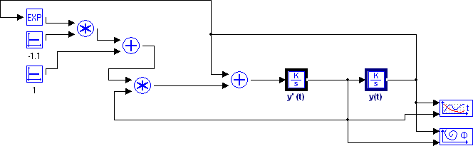
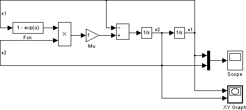

Авторы: Ковалевский С.Н., Журавель Ю.Н.
Источник: Автоматизация технологических объектов и процессов (АТОП — 2011) — 2011 / Материалы II Международной научно-технической конференции молодых ученых, аспирантов и студентов. — Донецк, ДонНТУ — 2011, Том 2, с. 132-136.
Ковалевский С.Н., Журавель Ю.Н. Компьютерное моделирование при исследовании динамических процессов в автоматических системах управления. Рассмотрена проблема визуального моделирования. Сравнивается продуктивность различных программных пакетов. Приведены результаты экспериментальных исследований.
Моделирование объектов и систем имеет ключевое значение. Автоматизация управления дает в руках инженера возможность повысить точность управления в сложных системах.
Для построения систем управления часто используются программные комплексы визуального моделирования, позволяющие ускорить и упростить разработку, например, оценить динамику, характеристики и качество регулирования. Наглядность их рабочего пространства, автоматический анализ характеристик системы, облегчает создание работоспособных технических систем.
Компьютерное моделирование позволяет еще до реализации системы в железе исследовать особенности поведения системы и оптимальные характеристики регуляторов.
На сегодняшний день существует множество систем моделирования. Анализ научно-технической литературы показывает, что наиболее популярными среди них являются DyMoLa, Dynast, Multisim, VisSim, ПК МВТУ, MVS, Simulink [1], однако лидером для решения задач моделирования среди них остаются визуальные среды Simulink и ПК МВТУ.
Программный комплекс «ПК МВТУ» [3] предназначен для исследования динамики и проектирования систем автоматического управления в машиностроении. По своим возможностям он не уступает зарубежным системам аналогичного назначения Simulink, VisSim и др. Главными достоинствами комплекса являются понятный русскоязычный интерфейс и развитые средства визуально-ориентированного моделирования систем произвольной природы без их ограничения по размерности. В «ПК МВТУ» имеются возможности для автоматического расчета частотных характеристик, линейного анализа в пространстве состояния, анализа и расчета оптимальных параметров, а также для создания пользовательских блоков (программируемых, векторных и др.). Он успешно применяется в энергетике, ядерной энергетике, теплотехнике, на транспорте и в авиации. Вычислительный ядро комплекса позволяет проводить оптимизацию и параметрическое исследование оборудования, в том числе и в режиме реального времени в комбинации с реальной аппаратурой.
В «ПК МВТУ» реализованы следующие группы блоков: дискретные, непрерывные, истоковые, синусоидальные, функции и математика.
Для качественного моделирования сложных систем в «ПК МВТУ» предусмотрена возможность объединения отдельных блоков в структурные субблоки. Функция и динамика работы в «ПК МВТУ» наглядна и проста благодаря использованию стандартных инструментов разработки [1]. В библиотеке блоков представлены все необходимые элементы: функция сглаживания фильтрации до порядка 30, а также нелинейные элементы порядка более 100. В пользовательских блоках можно реализовать код, не входящий в стандартные библиотеки.
В качестве альтернативы выступает система MATLAB, а именно входящие в ее состав модули и блоки Simulink. Идея этой среды состоит в том, что Simulink, как и ПК МВТУ, предоставляет визуальное программирование. Интеграция Simulink обеспечивает доступ ко всему спектру возможностей MATLAB. Для взаимодействия и проектирования в Simulink созданы удобные графические компоненты, а управляющие алгоритмы, созданные в ней, выполняются на высоком уровне точности работы алгоритмов и функциональных моделей. Кроме того, в отличие от аналогичных программ моделирования, используемые на этапе графического ввода блоки масштабируются и меняют свойства, а вычисления могут выполняться как шаговым методом на компьютере, так и компилироваться прямо в код для выполнения на контроллерах.
Simulink является мощным расширением системы MATLAB и использует весь ее инструментарий. Применение функций и скриптов MATLAB в моделях дает полную свободу при моделировании. Выходные сигналы и результаты работы легко визуализируются, экспортируются и анализируются (например, LTI-Viewer в Control System Toolbox). Наличие специализированных библиотек существенно упрощает моделирование сложных физических систем (например, Power System Blockset, Digital Signal Processing Blockset и т.д.).
Достоинством Simulink является также и то, что он позволяет подключать внешние модули и функции, написанные как на языке MATLAB, так и на C/C++, Fortran или Ada.
При оценивании эффективности программных средств, выделяют следующие ключевые критерии:
В качестве примера рассмотрена модель электромеханического привода. Для проведения эксперимента выбраны параметры аналогичных систем в средах «ПК МВТУ» и Simulink.
Графики переходных процессов, полученные в ходе экспериментов в средах ПК МВТУ и Simulink, демонстрируют идентичность вычислений с высокой точностью.

Рисунок 1 — Модель системы в ПК МВТУ

Рисунок 2 — Модель системы в Simulink
В работе проведен сравнительный анализ программных комплексов Simulink и ПК МВТУ при моделировании динамических систем. Обозначены ключевые преимущества каждого из продуктов.